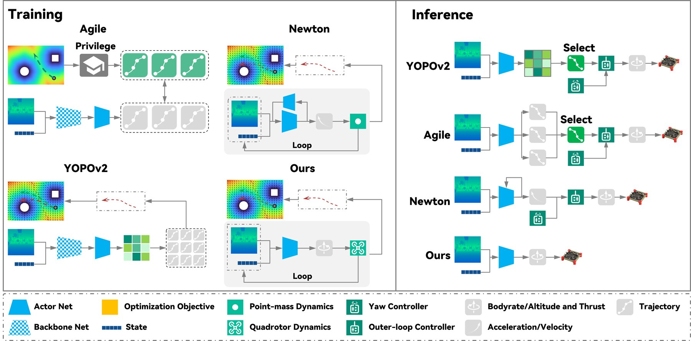
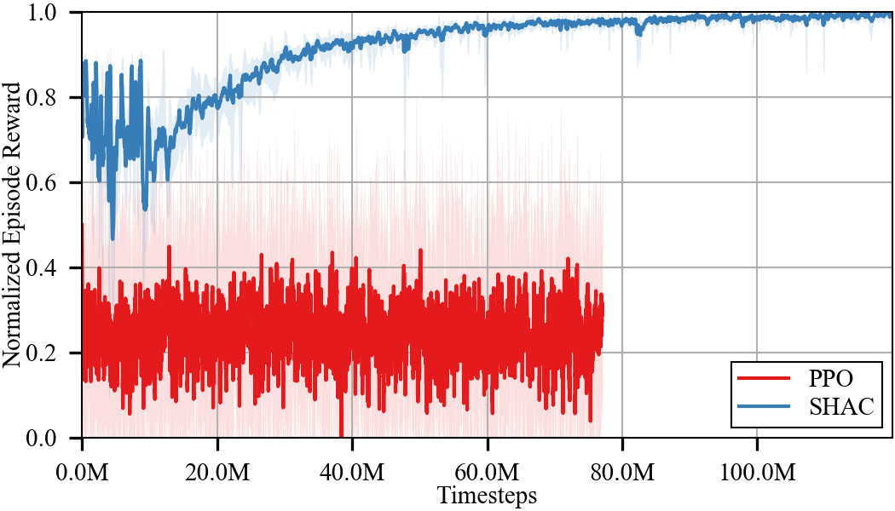
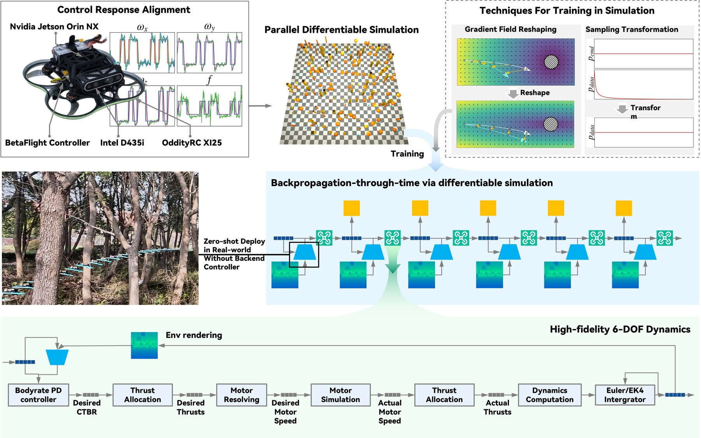
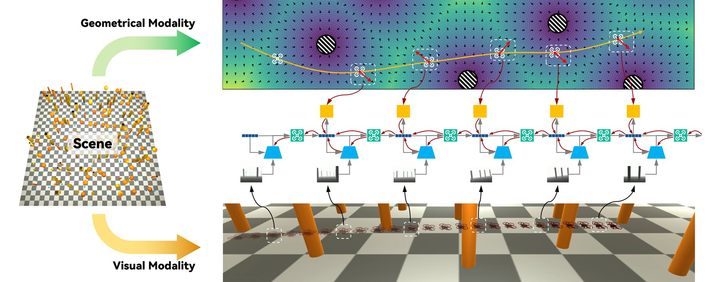
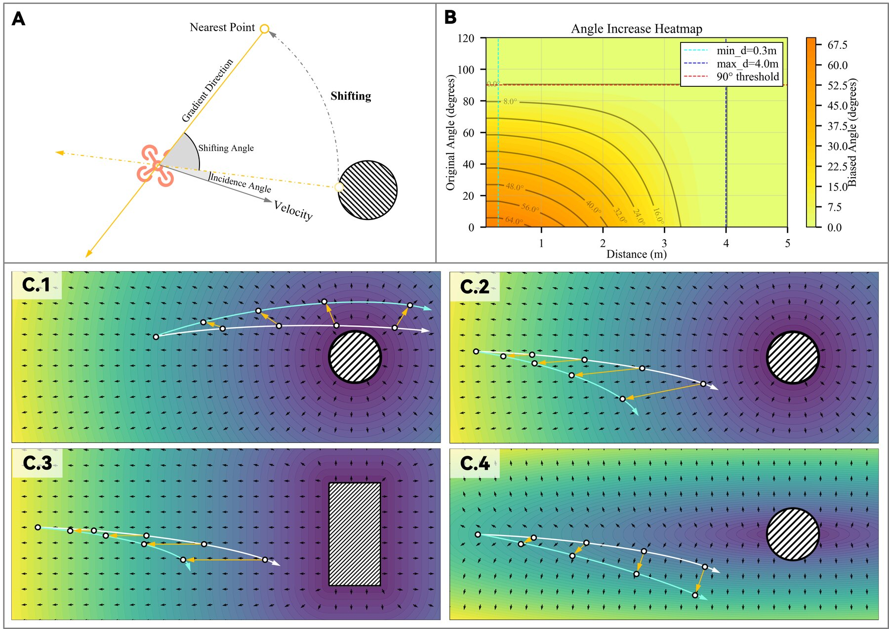
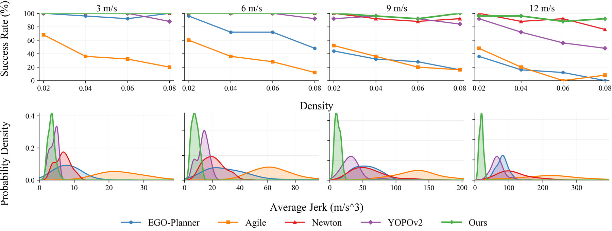
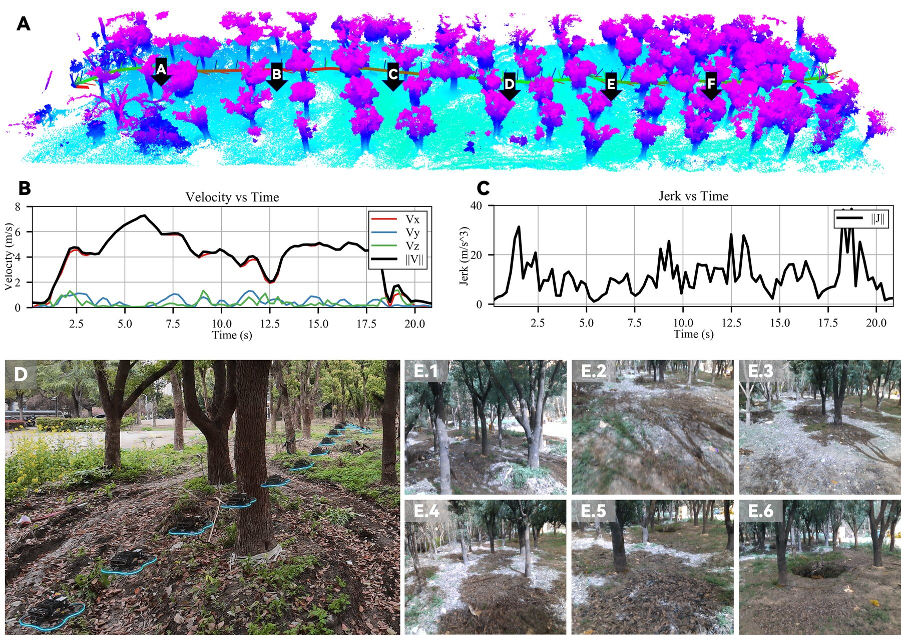
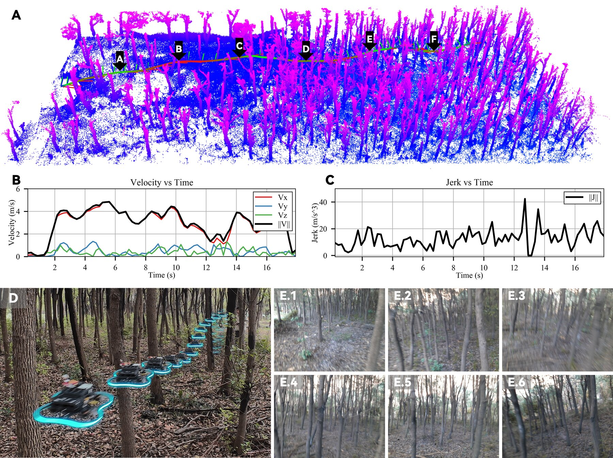

Achieve End-to-end Control by High-Fidelity Differentiable Simulation
Most drone planners treat the drone as a dot and output a path or velocity. At high speed a second controller cannot follow that plan, and the drone crashes.
One small network maps a depth image straight to motor-level commands. It is trained by pushing gradients back through a full physics simulator.
390 of 400 simulated runs succeed, with the lowest jerk of all methods. The real drone flies 7.5 m/s through a forest with no real-world training.
A point-mass model pretends the drone is a dot that can accelerate in any direction at once. A real quadrotor must first tilt, and its motors need time to spin up. This paper outputs CTBR (collective thrust and body rates: total thrust plus how fast to rotate about each of the 3 body axes). That is the low-level command sent straight to the flight controller.
The top chain has two gaps: the network trained on physics it will never fly, and a controller that must chase its output. The bottom chain removes both.

BPTT (backpropagation through time) means: roll the simulator forward for a few steps, then apply the chain rule backward through every step. Because the simulator is written in PyTorch, the slope of the reward with respect to the network weights is exact inside the rollout. No critic has to guess it.
The slope of each reward runs back into the state, through one dynamics block per step, into the action, and ends at the network weights θ. The depth image is a plain input: no gradient enters it.
The goal: the discounted sum of rewards over a rollout of \(T\) steps. \(\gamma\) is the discount, between 0 and 1.
Chain rule. The reward slopes come from the reward formula. \(\class{c-net}{\partial a_t/\partial\theta}\) is ordinary backprop through the network. The hard part is \(\partial s_t/\partial\theta\).
Every earlier action changed today's state. Each one is carried forward by one dynamics Jacobian (a matrix of slopes) per step.
One simulator step and its two Jacobians. PyTorch autograd computes them, however complex \(F\) is. The paper reports no exploding or vanishing gradients over its short horizons.
What PPO uses instead. The advantage \(A\) (how much better an action was than average) is a critic's estimate from samples. With full drone physics that estimate is too noisy, and PPO never learns the task.

The policy's acceleration command moves a dot directly. No attitude, no motors, no delay.
State \(s=\{\mathbf p,\mathbf q,\mathbf v,\boldsymbol\Omega\}\): position, orientation, velocity, angular velocity. Action \(a=\{\boldsymbol\Omega^d,f^d\}\): 3 desired body rates and 1 thrust. The command passes through seven stages before the drone moves.

| Term | Formula | What it does |
|---|---|---|
| Velocity Eq. 20 |
\( r_{\mathbf v}=\mathrm{SmoothL1}(\lVert\mathbf v-\mathbf v^d\rVert,0) \) | Follow the commanded velocity \(\mathbf v^d\). The Huber shape goes easy on small errors, so the drone may slow down to dodge. |
| Look ahead Eq. 21 |
\( r_p=\dfrac{\mathbf v\cdot\mathbf x_B}{\lVert\mathbf v\rVert\,\lVert\mathbf x_B\rVert} \) | Cosine between velocity and camera axis \(\mathbf x_B\). Flying where the camera points gives 1. Flying sideways gives 0. |
| Stability Eq. 22 |
\( r_s=\lVert\boldsymbol\Omega\rVert+c_{s2}\lVert\dot{\mathbf v}\rVert \) | Spin rate plus acceleration. Keeps the flight smooth. |
| Keep clear Eq. 23 |
\( r_a=-\,\mathrm{clip}(d_{risk}-d_{col}-r_{uav},0)^2\cdot\mathrm{detach}(v_{appr}) \) | Starts when the nearest obstacle is closer than \(d_{risk}\). Scaled by closing speed \(v_{appr}\). detach means the speed scales the penalty but gets no gradient. |
| Collision Eq. 24 |
\( r_c=-32\ln\!\big(e^{-7.5\,(d_{col}-r_{uav})}\big) \) | Strong term near contact. As printed it equals \(240\,(d_{col}-r_{uav})\), a straight line. The code may use a softplus \(\ln(1+e^{\cdot})\); check the repo. |
\(r_{\mathbf v}\) and \(r_s\) are costs as written, so their weights must be negative. That is my reading; the paper does not list the weights. Only position \(\mathbf p\) carries gradient from the reward back through the simulator.
Observation. The depth image is inverted and max-pooled to \(12\times16\), so near obstacles stand out. The state part is \(\mathbf v^d_H\), \(\mathbf v_H\), \(\boldsymbol\Omega\), \(\mathbf q\): 13 numbers. Velocities are rotated into the heading frame (world frame turned by yaw \(\psi\) only), \(\mathbf v_H=\mathbf R_{WH}\mathbf v\) (Eq. 25–26).

The distance reward pushes the drone straight away from the nearest obstacle point. This is the same push an ESDF gives (Euclidean signed distance field: a map of distance to the nearest obstacle). Head-on, that push is exactly backward, so the policy learns to brake. The fix: rotate the nearest point by an angle \(\Delta a\) before computing the reward.
\(d\) = distance to the nearest point. \(a\) = incidence angle between the velocity and the direction to that point (0° is head-on). The shift is largest when the obstacle is close and dead ahead. It is zero beyond \(d_{\max}\), and zero once \(a\ge a_{\max}=90°\), because then the drone is already passing.
| distance d | incidence a | shift Δa |
|---|---|---|
| 0.3 m | 0° | 67° |
| 2 m | 0° | 41° |
| 2 m | 45° | 21° |
| 3 m | 0° | 14° |
| 4 m or more | any | 0° |
Computed with \(d_{\min}=0.3\) m and \(d_{\max}=4\) m from Fig. 4B, angles in radians, and \(\alpha=\pi/4\). The paper does not state \(\alpha\); this value reproduces the 67° peak of its heatmap.

All layers use LeakyReLU. No memory between frames: each command comes from the current image and state alone. Trained with SHAC across three groups of random scenes (boxes and pillars, short pillars, tall pillars).
The sampling fix. A slow flight stays in the scene longer, so it leaves more samples. If commanded speeds are drawn uniformly, the data is mostly slow flight. Drawing speeds in proportion to the speed itself cancels this.
Flight time scales as \(1/v^d\), so sample count does too. The last formula is how to draw such a speed from one uniform random number \(u\).
Simulated forests, 25 runs per setting. Jerk is how fast acceleration changes, in m/s³; lower means smoother. Speed is forward progress toward the goal, so detours lower it.
| Method | Success, of 25 | Speed | Jerk, m/s³ | All 16 settings |
|---|---|---|---|---|
| EGO-Planner | 6.67 | 215 / 400 | ||
| Agile | 5.46 | 123 / 400 | ||
| YOPOv2 | 8.41 | 353 / 400 | ||
| Newton | 5.59 | 382 / 400 | ||
| Ours | 7.61 | 390 / 400 |
Paper Table I. The last column is my sum over all 4 speeds × 4 densities. Newton is close on success; the gap is in jerk (112 vs 23) and speed.
| Method | Success, of 5 | Speed | Jerk, m/s³ |
|---|---|---|---|
| EGO-Planner | 4.60 | ||
| Agile | 3.55 | ||
| YOPOv2 | 6.03 | ||
| Newton | 3.15 | ||
| Ours | 4.39 |
Paper Table II. Both differentiable-simulation methods survive. Newton does it by braking again and again (3.15 m/s); this method keeps moving (4.39 m/s).



Hardware: Jetson Orin NX, Intel RealSense D435i depth camera, Betaflight flight controller. Everything runs onboard. Thrust is capped at twice the drone's weight.